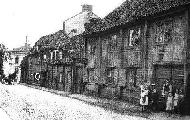
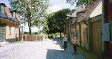
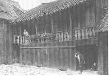
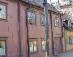
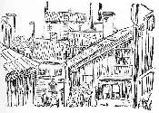

Södermalm i tid och rum. Stockholm
4. Mäster Mikaels Gata 10, Kv GlasbruksklippanFastigheten ägdes 1730 av amiralitetskaptenen Nils Åhman. Säkerligen är det han som efter den stora branden 1723 lät uppföra åtminstone gathuset. I husets övervåning bodde han med sin familj i tre rum. Bottenvåningen beboddes av skepparen i Kungl. Amiralitetet Nils Trana. Det var ett borgarhus med högklassig fast inredning, t ex dekorativt målade tak, vävtapeter och bröstpaneler. Ytterligare ett bostadshus finns kvar tvärs över den stensatta gården.
Inne på gården låg en låg timrad köks- och bagarstuga som var sammanbyggd med gathuset genom en loftgång. Denna revs i början av 1900-talet. Fogelström berättar att i den här gården hade på 1890-talet en på sin tid välkänd undergörare, Fredrik August Boltzius, sina mottagningar. Han hade varit gårdfarihandlare men efter en religiös kris börjat predika. Han blev snart känd över hela Skandinavien som undergörare.
Ur Ett berg vid vattnet, Per-Anders Fogelström, 1969:
I tian (som fortfarande står kvar) hade undergöraren Boltzius sina mottagningar på 1890-talet. Fredrik August Boltzius hade varit gårdfarihandlare men efter en religiös kris börjat predika under sina vandringar. Han flyttade till Stockholm 1884 och blev snart känd över hela Skandinavien som helbrägdagörare och "undergörare", särskilt blev hans välgörande "svettedukar" omtalade.
Bland hans patienter var den blivande Frälsningsarmé-ledaren Tobias Ögrim som sex år gammal botades för "en svårare halsåkomma" , enligt ett intyg som pojkens föräldrar utfärdade:
I tian predikade och helbrägdagjorde Boltzius "bland massor av sjuka och lytta och andra troende, som dagen i ända och mer eller mindre ödmjukt böjde knä och vaggade fram och tillbaka på det gamla golvet med de breda, nötta tiljorna, där tidigare den i anden mera enkle blanksmörjfabrikören tjänat en förmögenhet.
|
 
|
 
|
|
På söndagseftermiddagarna förvandlades för en stund den gamla kalkstensbelagda gården i 10:an till friluftstempel för en liten grupp frälsningssoldater, och musik från mässing och strängaspel samt sång från mycket olika begåvade strupar dallrade fritt och 100-procentigt mot höjden jämfört med den sämre verkningsgrad som givetvis måste förefinnas under Boltzius' låga och av ålder något buktiga tak." (Isberg)
|
 |
|
 
|
  Gården Mäster Mikaels gata 10, söderifrån. Gården Mäster Mikaels gata 10, söderifrån.Adlersparreska palatset i bakgrunden. Teckning i Svenska Dagbladet 1907. |
Kring sekelskiftet 1900 omtalas huset i en av stadens bostadsundersökningar som ett av de mest trångbodda och miserabla bostadshusen i församlingen.
I småkåkarna intill bodde enklare folk, som i Trätolvan där det på i 890-talet fanns många italienare. En av dem var en s.k. femtonkonstnär med positiv på magen, bastrumma och "skrammellock" på ryggen och bjällror på huvudet. När gubben började sprattla uppstod en märklig musik. Andra av italienarna sålde ballonger, skrikblåsor och gipskattor. En av dem var Biagio Valente som tillsammans med en annan italienare, Jaconelli, orättvist misstänktes som skyldig till det på sin tid så omtalade Hammarbymordet. Uttrycket "Kyss Carlsson" lär ha tillkommit när Valentes gamla mamma Teresa från Fjällgatan ville kyssa domaren som frikänt hennes son och denne avvärjande sa: "Kyss inte mej - kyss Carlsson" (d.v.s. försvarsadvokaten, häradshövding Axel Carlsson).
"Officiellt hade gamla tolvan inte så många hyresgäster, men så gott som varje hyresgäst hade flera inneboende, och jag undrar om inte också de inneboende hade inneboende. För det måtte ha varit trångt om saligheten i den kåken", berättar Richard Isberg som brukade åka kälke i Schenasgränden (Renstiernasgränden) tillsammans med femtonkonstnärens dotter Francesca.
Om trängseln i smålägenheterna på Söder har amanuensen i statistiska centralbyrån J. Guinchard några ord att säga ("Statistisk undersökning angående bostadsförhållandena i Stockholm åren 1900 och 1902") :
"Av 13. Stadsgårdsroten äro vissa partier, de vid Glasbruksgatan och Fjällgatan, särskilt föremål för anmärkningar om dåliga och på samma gång mycket tätt bebodda lägenheter. Över trångboddhet ha även många anmärkningar gjorts i 14. Skanstullsroten; 8 à 10 personer i ett enkelrum är ej ovanligt."